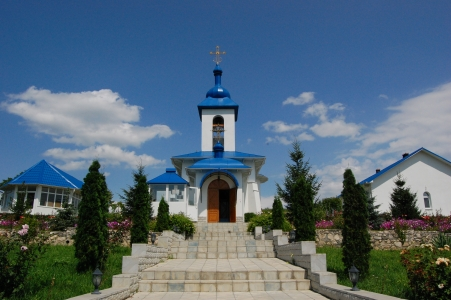

Descoperă
Mănăstirea Ulmu
Mănăstirea “Sfânta Teodora de la Sihla” este ctitoria Înalt Prea Sfinţitului Petru, Arhiepiscop al Chişinăului, Mitropolit al Basarabiei şi Exarh al Plaiurilor, şi a fostului primari de Ulmu – Tudor Coşleţ. Aceasta este prima mănăstire de maici aflată sub oblăduirea Mitropoliei Basarabiei şi apare în spaţiul spiritual dintre Prut şi Nistru în toamna anului 2004. Totodată, sfântul lăcaş de la Ulmu este printre puţinele care are hramul unei sfinte românce, marcat la 7/20 august.
Biserica „Intrarea Maicii Domnului în Biserică"

Biserica "Intrarea Măicii Domnului in Biserică" a fost ridicată la anul 1881 din piatră,in stil rusesc. O biserică mai veche,de la care s-a păstrat doar prestorul, a fost zidită imediat în apropiere de biserica noua din piatră. Izvoarele privind istoria sfântului lăcaş cu hramul Intrarea Măicii Domnului in Biserică arată că la inceputul secolului XX aici se păstrau mai multe cărţi vechi româneşti, printre care Apostol, Iaşi (1786), Cuvinte din Vasile cel Mare Bucuresti 1826, Evanghelie, Bucureşti (1742), Penticostar, Triod, Chişinau , 1862; Mineu praznicar.
Villa Sano

Bine ati venit la Villa Sano! Viziteaza-ne pentru a arenda o cabană in sinul naturii, a va relaxa la bazin si petrece timpul cu cei dragi in aerul purificat de nuci, conifere și mesteacăn.